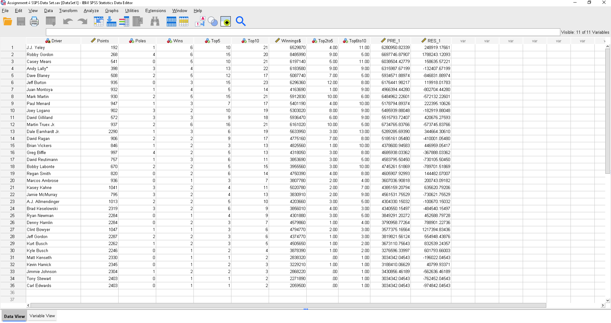
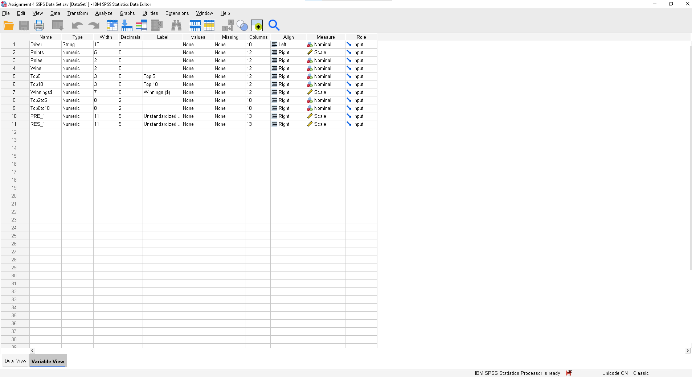
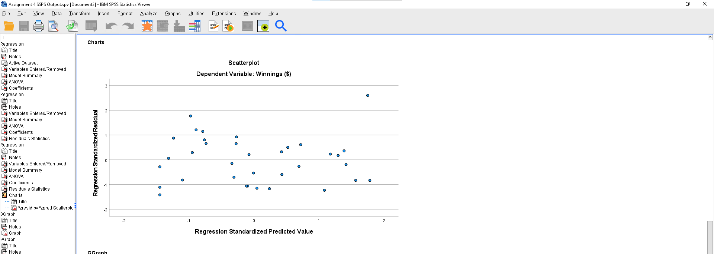
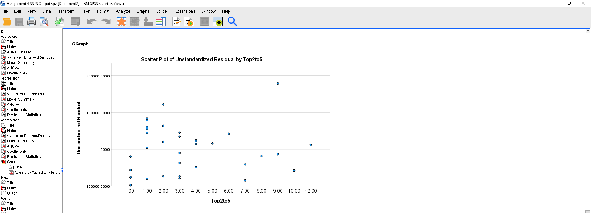
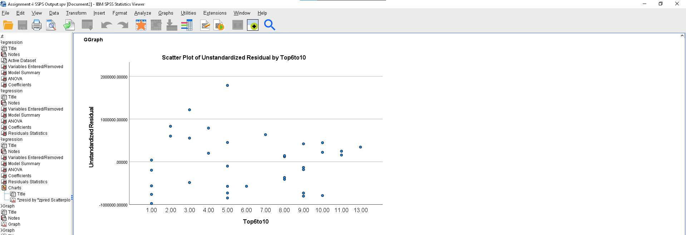
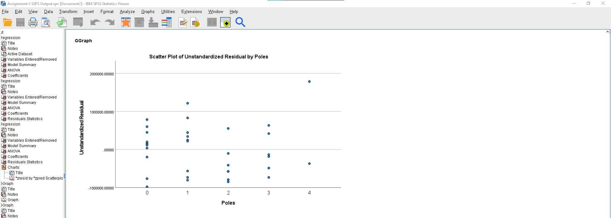
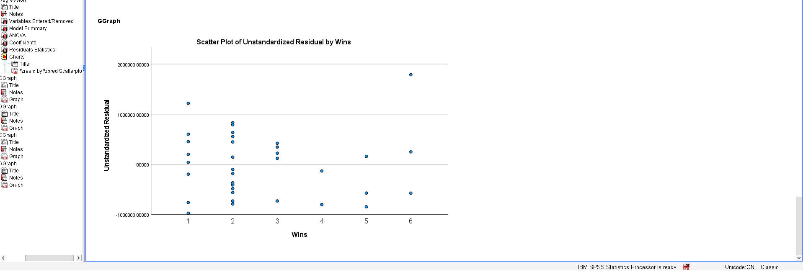
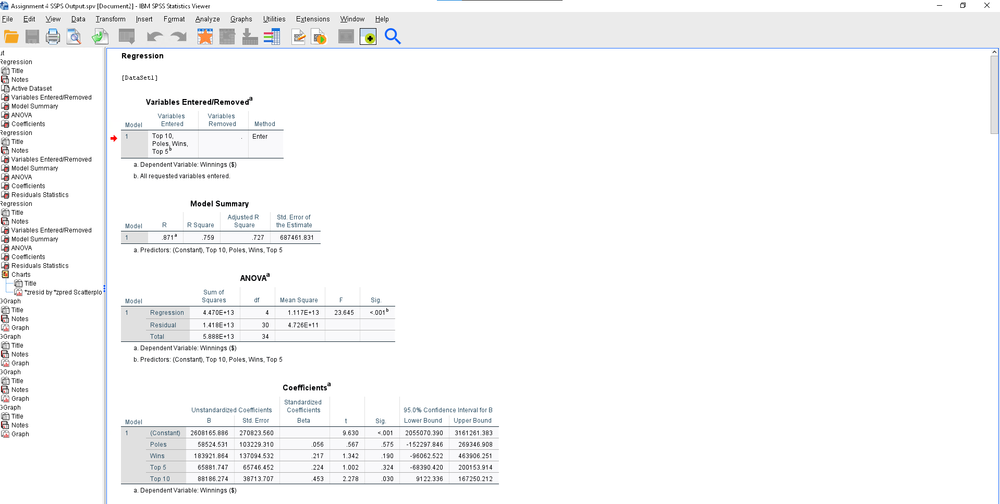

Project Details
(This Project Is A Part Of ADMS 3511 Business Analytics Course)
Problem:
Dale Earnhardt Jr. won the 2012 Daytona 500, the most important race of the NASCAR season. His win was
not so surprising because for the 2011 season he finished seventh in the point standings with 2290 points,
behind Tony Stewart (2403 points), Carl Edwards (2403 points), Kevin Harvick (2345 points), Matt Kenseth (2330
points), Brad Keselowski (2319 points), and Jimmie Johnson (2304 points). In 2011 he earned $5,633,950 by
winning one Pole (fastest driver in qualifying), winning three races, finishing in the top five 6 times, and
finishing in the top ten 19 times. File NASCAR.xlsx includes data for the 2011 season for the top 35 drivers.
Use IBM SPSS to perform the analyses asked in the following questions. Subsequently write a one-page report to
discuss your findings.
1. Develop an estimated regression equation that can be used to predict Winnings ($) given the number of poles
won (Poles), the number of wins (Wins), the number of top five finishes (Top 5), and the number of top ten
finishes (Top 10). Test for individual significance at a 0.05 level of significance.
2. Create two new independent variables: Top2to5 and Top6to10. Top2to5 represents the number of times the driver
finished between second and fifth place and Top6to10 represents the number of times the driver finished between
sixth and tenth place. Develop an estimated regression equation that can be used to predict Winnings ($) using
Poles, Wins, Top2to5, and Top6to10. Test for individual significance at a 0.05 level of significance.
3. What estimated regression equation would you recommend using.
Reference Resources :
After inserting Excel data into SPSS and performing some analyses on SPSS:
Dataset

Descriptions of all variables in the dataset:

Scatter Plot:





Request 1:
Regression analysis to predict Winnings ($) given number of poles won (Poles), the number of wins (Wins), the number of top five finishes (Top 5), and the number of top ten finishes (Top 10)
For the first model, when testing for individual significant at a 0.05 level of significant, among Poles, Wins, Top 5 and Top 10 variables, only Top 10 is significant since it has Significant value less than 0.05 in the Coefficients table while others are insignificant.
Request 2:
Regression analysis to predict Winnings ($) given number of poles won (Poles), the number of wins (Wins), the number of top two to five finishes (Top2to5), and the number of top six to ten finishes (Top6to10)

For the second model, when testing for individual significant at a 0.05 level of significant, it is evident that except Poles variable, other varibles including Wins, Top 2 to 5 and Top 6 to 10 are significant and their impact is significant on the dependent variable as they have Significant value less than 0.05 in the Coefficients.
Request 3:
Estimated regression equation to be recommended:
When running 2 regression analysis for the requirements of question 1 and 2, it can be seen that
both models are significant and these models provide better fit than those which have no independent variables.
For the first model, when testing for individual significant at a 0.05 level of significance, among Poles, Wins,
Top 5 and Top 10 variables, only Top 10 is significant since it has Significant value less than 0.05 in the
Coefficients table while others are insignificant. Standardized coefficients can be used to compare the strength
of impact of the variables. As can be seen from the same table, this value of top 10 finishes is highest, which
means top 10 also has the most impact on the dependent variable. A unit increase in top 10 finishes will increase
Winnings ($) by 88186.274 while keeping the values of other independent variables constant.
When breaking the Data
Set, creating two new independent variables Top2to5 (Top 5 substract Wins) and Top6to10 (Top 10 substract Top 5)
and running regression analysis to predict Winnings ($) given number of poles won (Poles), the number of wins
(Wins), the number of Top2to5 finishes, and the number of top six to ten finishes (Top6to10), for the second
model, adding two new independent variables did not make changes to the value of R, R square and Adjust R square as
both models have the similar values in the Model Summary table.
When testing for individual significant at a 0.05
level of significance in the second model, it is evident that except Poles variable, other variables including
Wins, Top 2to5 finishes and Top 6to10 finishes are significant and their impact is significant on the dependent
variable as they have Significant values less than 0.05 in the Coefficients table. It also means that there is no
clear relationship between Poles and Winnings ($) and the impact of Poles on dependent variables is insignificant
to predict or explain the values of Winnings ($) accurately and reliability.
Overall, the second model is
recommended to predict Winnings($) than the first one. There are two reasons for that. Firstly, as mentioned
above, when testing for individual significant at a 0.05 level of significance, in the second model, apart from
Poles, other variables are significant while it can be shown from the first model that apart from Top 10 finishes,
other independent variables are insignificant. Almost all the independent variables in the model 2 have real and
significant impact on this model. Lastly, although both models bear the same values of R square and Adjust R
square, the independent variables are most significant and not highly correlated between the variables in the
second model .
;
Contact info


Nhi Nguyen


Copyright © 2022. All rights reserved